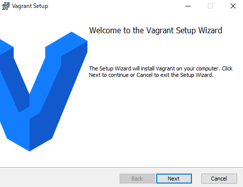
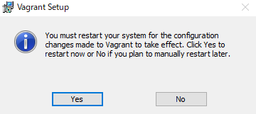

VagrantのインストールからCent OS7を仮想OSとして実行およびログインするところまで
Windows10,64bitのPCにて検証。
コマンド実行にはGit for Windowsの Git Bashを使用している。
（
参考：Git for Windowsのインストール）
手順
-
公式サイトからインストーラ（例 vagrant_2.2.3_x86_64.msi）をダウンロードする。
-
特に面倒な設定はないので道なりにインストールを進める。最後まで進めるとPC再起動が促される。


-
インストールの確認を下記コマンドにてGit Bash、またはコマンドプロンプトで行える。
$ vagrant --version
-
Vagrant単体では役に立たないのでVirtualBoxをインストールする。
公式サイト
からインストーラ（例VirtualBox-6.0.4-128413-Win.exe）をダウンロードする。
-
VirtualBoxのインストール。幾つか設定があるがデフォルトのまま進めていく。
-
下記画面が表示されたらVirtualBoxのインストール成功。
-
続いて仮想OSのインストールを行う。まず最初に、任意のディレクトリ（例：vagrant_test1）を作成しカレントディレクトリにする。
$ mkdir vagrant_test1
$ cd vagrant_test1
-
仮想OSのイメージであるBoxが必要になる。boxはネット上に存在するが公式サイトでも用意されている。
( 公式サイトでの入手先 )
今回はCent OS 7 を仮想OSにする。
遷移先ページ内から「vagrant init centos/7」文字列を入手しておく。
-
「vagrant init」コマンドを実行する。
$ vagrant init centos/7
-
「Vagrantfile」が作成されるのでテキストエディタで開く。
-
Vagrantfileファイル内の「# config.vm.network "private_network", ip: "192.168.33.10"」
となっている箇所のコメントを外して保存。
-
「vagrant up」コマンドを実行する。
$ vagrant up
-
以上で仮想OSの作成終了。
VirtualBoxの画面で仮想OSが実行されているのが確認できる。
-
仮想OSにログインする。
$ vagrant ssh
参考リンク
公式サイト
【初歩の初歩】Vagrantのインストールと使い方を簡単解説
dockerとvagrantの違い言える？新人エンジニアでも分かった気になれる俺流まとめ
Vagrantとdockerを使って快適な開発環境を作る（サンプルあり）
VagrantとDockerについて名前しか知らなかったので試した